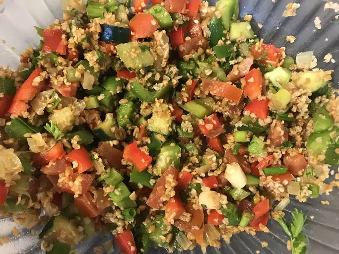

Bulgur Salad (Tabouli)
Home

Vegetarian Bulgur Salad (Tabouli)
A delicious and healthy taste from Middle Eastern cuisine!
Ingredients:
- Fine bulgur
- Boiling water
- Olive oil
- Onion
- Tomatoes
- Cucumber
- Green bell peppers
- Red bell peppers
- Green onions
- Fresh parsley
- Fresh mint
- Olive oil
- Lemon juice
Steps:
- Boil the bulgur.
- Chop the fresh herbs, tomatoes, cucumbers, onions and bell pepppers.
- Mix the herbs, vegetables and the bulgur in a bowl.
- Add salt and olive oil as you mix.
- Serve!